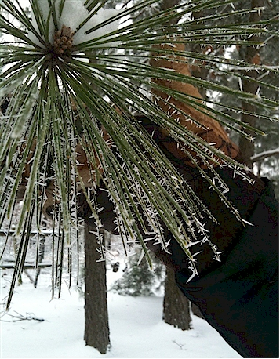
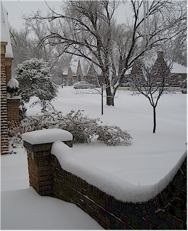
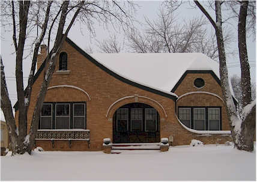
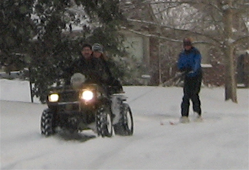
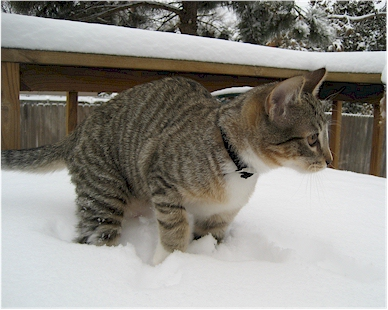
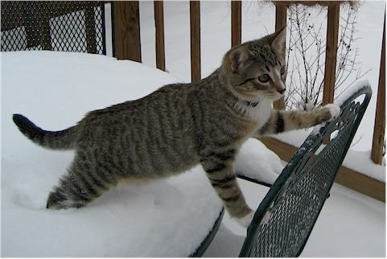

January 2010
| OKC had 14 inches of snow on Christmas Eve - a
record-breaking snow for these parts. You would have think that we
met our quota for the year but no, we got another round of it in
January. Only about 5 inches this time thank goodness. Here
are some pictures we took during that time. |
|
|
Mom sent me this shot of Dad with "Long Dog" |
 |
| This is my dad holding a branch of a pine tree - see the ice splinters? How cool is that?! |
|
 |
 |
| Looking up the street from our front porch | Our house in snow |
 |
 |
| Insanity at the park - neighbors skiing behind a 4-wheeler on city streets | Rocket gets an unwanted taste of life in the snow |
 |
|
| Here he tries to find a dry spot to stand | I think he is saying to himself, "I'm going to shred the shower curtain for this!" |
| Eric's office closed that Friday but I had to work from the house that day. It was a little hard to concentrate with this on the other side of the office door! |
|